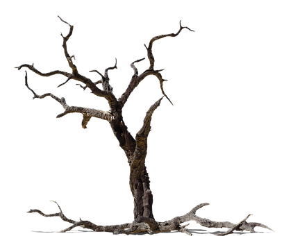
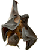
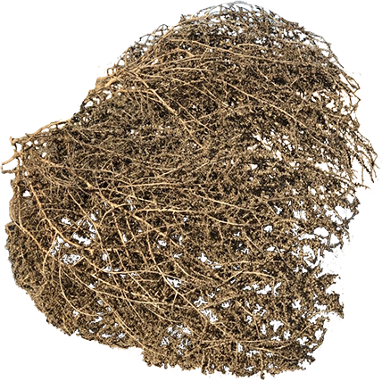
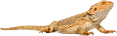
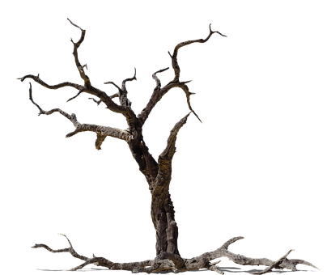
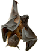
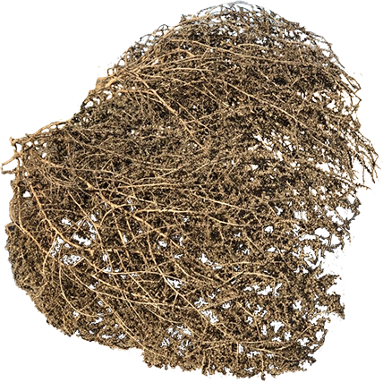
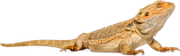
 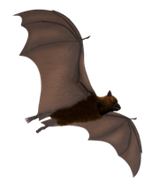
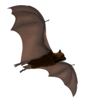
 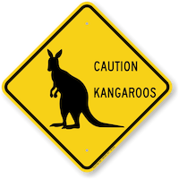
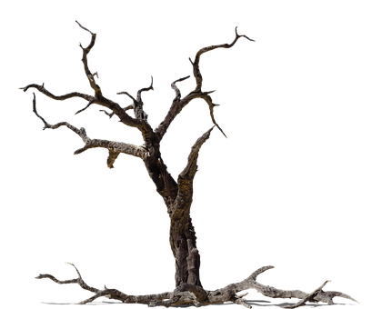
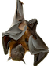
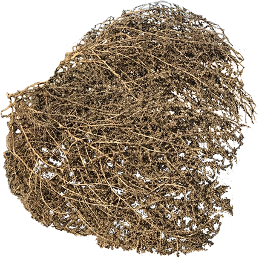
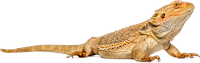
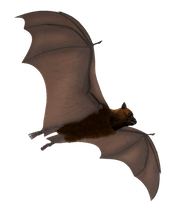
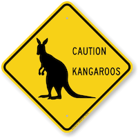
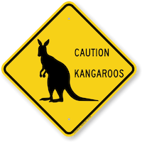
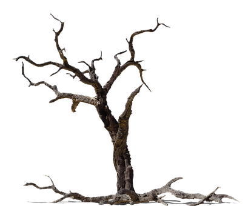
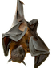
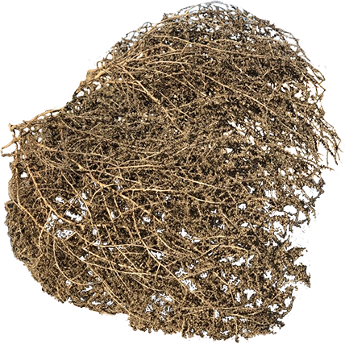
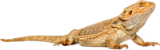
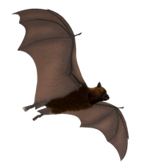
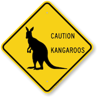
Det finnes flere arter «bearded dragon» i australia, alle har pigger langs sidene av kroppen og halsen deres. De fleste av artene har en hale som er like lange som kroppen, noen kan også bli opptil 60cm lange. De kan også endre farge ettersom hvordan de føler seg og hvordan været er, om det er kaldt blir de mørkere og om sommeren blir de lysere. Trusselen for disse er blant annet slanger og når de føler seg truet utvider de piggene og kroppen ofte med åpen munn for å virke truende.
Noen av symptomene giften til en «death adder» vil gi er hodepine, muskelsvekkelse og pustesvikt, disse slangene vil derimot ikke alltid bite med gift da det bruker mye energi for slangene å produsere. De vil ligge å vente på byttet, og forsvarsmekanismen deres er å ikke bli sett, noe som gjør det farlig for mennesker og dyr som er ute på tur. De har også muligheten til å flate ut og utvide kroppen for å unngå rovdyr som vil ha dem.
«Little flying red foxes» lever sammen i store grupper og flyr ut sammen for å jakte om natten, de spiser eukalyptus og de spiller en stor rolle for den australske naturen fordi de pollinerer skogene. Noen forskere mener de vil bli utryddet innen 2050 på grunn av mistet habitat, strømlinjer og hønsenetting.
Som koalaen er kenguruen et pungdyr, de er derimot den største av pungdyrene. Det finnes 59 arter i 13 slekter, de røde kenguruene som er den største typen kan bli opptil 2 meter høye og kan nå en toppfart på 65 km/t. De kan hoppe opptil 3 meter over bakken og 7.5 m langt. I Australia er det fler kenguruer enn mennesker. Det er estimert et sted mellom 30 og 60 millioner kenguruer i Australia mens det bare er ca. 26 millioner mennesker boende der.